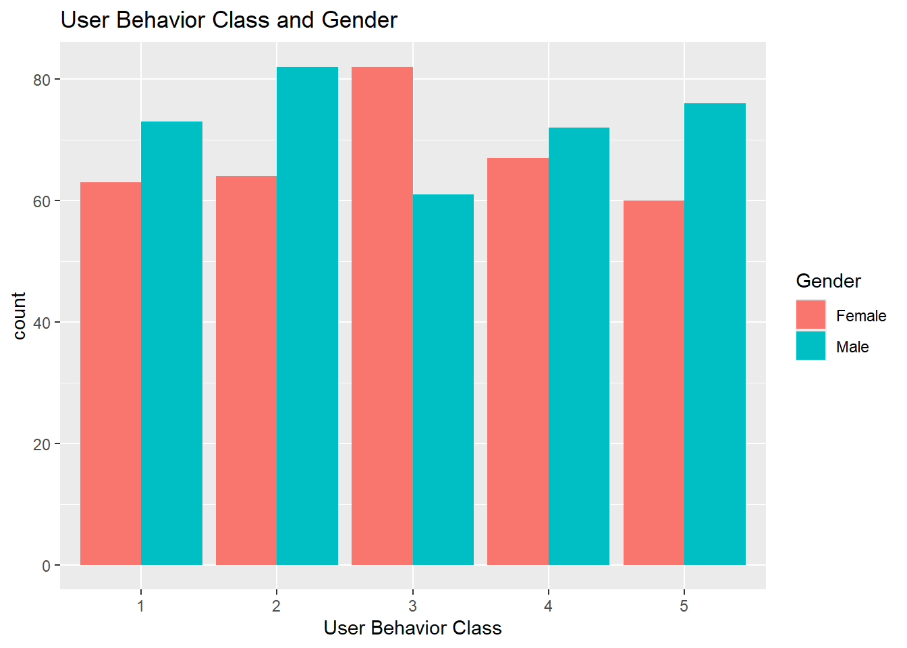
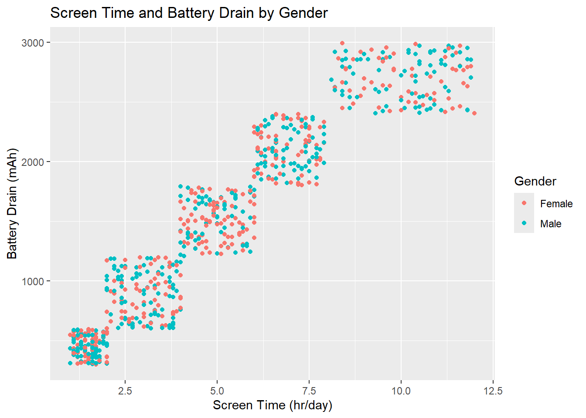
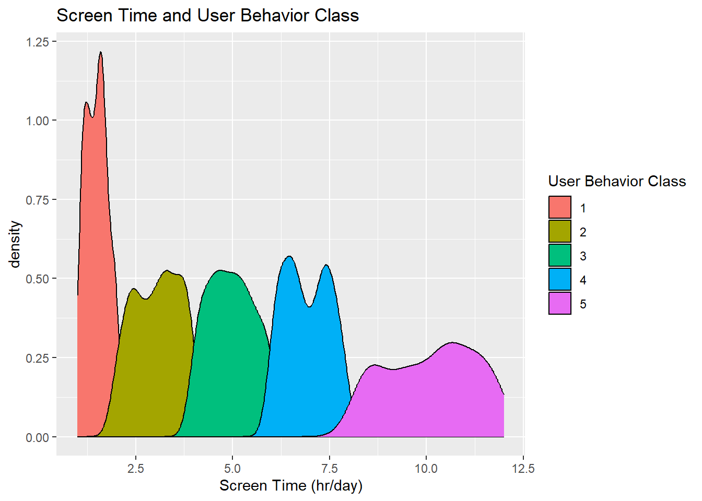
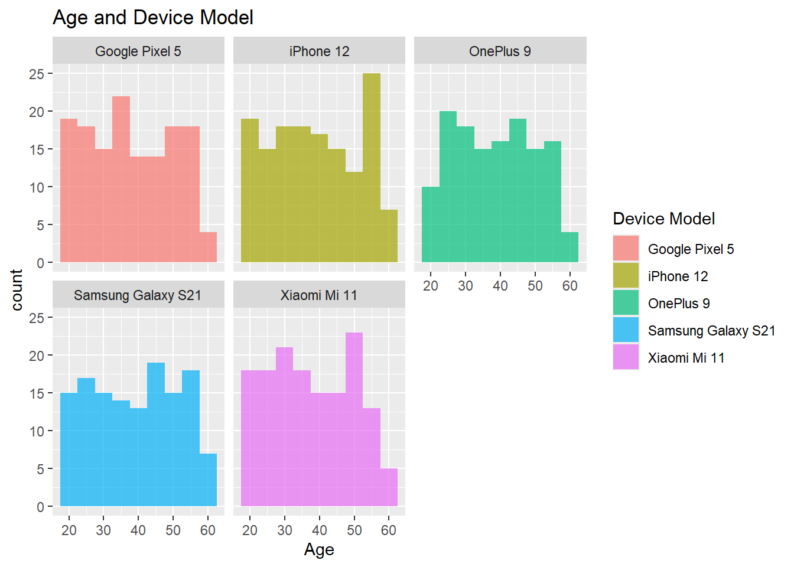

Warning: package 'tidyverse' was built under R version 4.2.3
Warning: package 'ggplot2' was built under R version 4.2.3
Warning: package 'tibble' was built under R version 4.2.3
Warning: package 'tidyr' was built under R version 4.2.3
Warning: package 'readr' was built under R version 4.2.3
Warning: package 'purrr' was built under R version 4.2.3
Warning: package 'dplyr' was built under R version 4.2.3
Warning: package 'stringr' was built under R version 4.2.3
Warning: package 'forcats' was built under R version 4.2.3
Warning: package 'lubridate' was built under R version 4.2.3
── Attaching core tidyverse packages ──────────────────────── tidyverse 2.0.0 ──
✔ dplyr 1.1.4 ✔ readr 2.1.5
✔ forcats 1.0.0 ✔ stringr 1.5.1
✔ ggplot2 3.5.1 ✔ tibble 3.2.1
✔ lubridate 1.9.3 ✔ tidyr 1.3.1
✔ purrr 1.0.2
── Conflicts ────────────────────────────────────────── tidyverse_conflicts() ──
✖ dplyr::filter() masks stats::filter()
✖ dplyr::lag() masks stats::lag()
ℹ Use the conflicted package (<http://conflicted.r-lib.org/>) to force all conflicts to become errors
library(ggbeeswarm)
Warning: package 'ggbeeswarm' was built under R version 4.2.3
library(ggExtra)
Warning: package 'ggExtra' was built under R version 4.2.3
Data Exploration
Variables:
User ID: Unique identifier for each user.
Device Model: Model of the user’s smartphone.
Operating System: The OS of the device (iOS or Android).
App Usage Time: Daily time spent on mobile applications, measured in minutes.
Screen On Time: Average hours per day the screen is active.
Battery Drain: Daily battery consumption in mAh.
Number of Apps Installed: Total apps available on the device.
Data Usage: Daily mobile data consumption in megabytes.
Age: Age of the user.
Gender: Gender of the user (Male or Female).
User Behavior Class: Classification of user behavior based on usage patterns (1 to 5).
Reading in and manipulating data
dev_data <-read_csv("user_behavior_dataset.csv")
Rows: 700 Columns: 11
── Column specification ────────────────────────────────────────────────────────
Delimiter: ","
chr (3): Device Model, Operating System, Gender
dbl (8): User ID, App Usage Time (min/day), Screen On Time (hours/day), Batt...
ℹ Use `spec()` to retrieve the full column specification for this data.
ℹ Specify the column types or set `show_col_types = FALSE` to quiet this message.
head(dev_data)
# A tibble: 6 × 11
`User ID` `Device Model` `Operating System` `App Usage Time (min/day)`
<dbl> <chr> <chr> <dbl>
1 1 Google Pixel 5 Android 393
2 2 OnePlus 9 Android 268
3 3 Xiaomi Mi 11 Android 154
4 4 Google Pixel 5 Android 239
5 5 iPhone 12 iOS 187
6 6 Google Pixel 5 Android 99
# ℹ 7 more variables: `Screen On Time (hours/day)` <dbl>,
# `Battery Drain (mAh/day)` <dbl>, `Number of Apps Installed` <dbl>,
# `Data Usage (MB/day)` <dbl>, Age <dbl>, Gender <chr>,
# `User Behavior Class` <dbl>
dev_data <- dev_data |>rename("user_id"="User ID","dev_mod"="Device Model", "op_sys"="Operating System","app_use_time"="App Usage Time (min/day)","screen_time"="Screen On Time (hours/day)","bat_drain"="Battery Drain (mAh/day)","num_apps"="Number of Apps Installed","dat_use"="Data Usage (MB/day)","age"="Age","gender"="Gender","user_class"="User Behavior Class") |>mutate(across(c(dev_mod, op_sys, gender, user_class), as.factor)) |>mutate(user_id =as.character(user_id))dev_data
ggplot(data = dev_data, aes(x = user_class, fill = gender)) +geom_bar(position ="dodge") +labs(x ="User Behavior Class", title ="User Behavior Class and Gender") +scale_fill_discrete("Gender")

ggplot(data = dev_data, aes(x = screen_time, y = bat_drain, color = gender)) +geom_point() +labs(x ="Screen Time (hr/day)", y ="Battery Drain (mAh)", title ="Screen Time and Battery Drain by Gender") +scale_color_discrete("Gender")

ggplot(data = dev_data, aes(x = screen_time, fill = user_class)) +geom_density() +labs(x ="Screen Time (hr/day)", title ="Screen Time and User Behavior Class") +scale_fill_discrete("User Behavior Class")

ggplot(data = dev_data, aes(x = age, fill = dev_mod)) +geom_histogram(binwidth =5,position ="identity", alpha =0.7) +labs(x ="Age", title ="Age and Device Model") +scale_fill_discrete("Device Model") +facet_wrap(~ dev_mod)

Plots that we haven’t looked at before
ggplot(dev_data, aes(dev_mod, screen_time, color = user_class)) +geom_beeswarm(dodge.width =1) +ggtitle("Device Model and Screen Time by User Behavior Class")scatter <-ggplot(data = dev_data, aes(x = screen_time, y = bat_drain, color = gender)) +geom_point() +labs(x ="Screen Time (hr/day)", y ="Battery Drain (mAh)", title ="Screen Time and Battery Drain by Gender") +scale_color_discrete("Gender")ggMarginal(scatter, groupColour =TRUE, groupFill =TRUE)